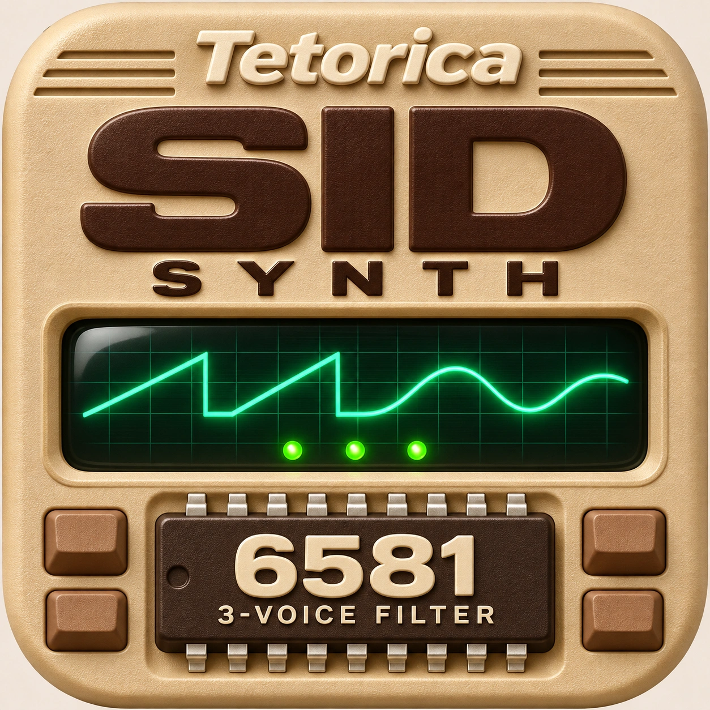

THREE VOICES · ONE SHARED FILTER
Tetorica SID Synth
Play the SID. Shape the filter. Take the code.
Enable audio, then play the keyboard. Editing does not start audio.
Sounds from SID
Open a SID file, play the song, then capture a voice for this keyboard.
Choose a local SID file. Loading alone does not start audio or replace your sound.
No snapshot yet. Capture voices, then select a Voice to load it into this keyboard.
No snapshot captured.
?
An instantaneous voice snapshot. Playing a Synth key restarts pitch and ADSR; elapsed Envelope, phase and later song automation are not restored. Independent Sync / Ring pairs retain their frequency ratio. Some waveforms and connections are unavailable with a reason.
Pause holds the song and its current channel settings. Inspect CH 1 / 2 / 3 or Capture voices while paused, then Resume to continue from that position. Selecting a captured Voice stops the preview and loads the keyboard instrument.
PAL · one SID · supported PSID / RSID v2 · built-in C64 environment. Unknown/either hints use PAL / 6581 in Auto. For Direct VBI or your C64 ROMs, use SID Player and save a preset.
Live output after Master volume.
Your sound
Ready · edits apply automatically.
CH settings differ · edits apply to all.
?
CH 1 / 2 / 3 selects both the settings to edit and the physical channel played by the keyboard. Round robin keeps each channel's sound and allocates keys between them. When values differ, editing uses CH 1 as a reference. Changing a setting applies that setting to all three channels. Loading a voice preset replaces the complete sound on all three. Filter and model are shared hardware settings.
Auto update follows the selected SID song channel during playback or Pause. Playable settings are also kept for this keyboard; turn Auto update off to edit them. Round robin follows the last explicitly selected song CH and applies its playable settings to all three channels. Unsupported raw settings remain visible without replacing the last playable sound.
3 voices · round robin · 0 held
Preset · save, load and JavaScript
Voice preset saves the current sound. Channel setup also saves all three channels and Edit & play selection. JSON up to 64 KiB; loading resets held notes and Pitch. JavaScript uses the selected physical channel in Playground C64 mode.
Keyboard
Every key plays this sound. No keyboard split.